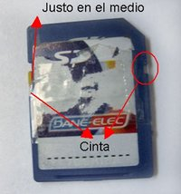

SD Write Protected Syndrome
Hace ya un tiempo, sufro del "SD Write Protected Syndrome".
De qué se trata?
Insertar/ponés una tarjeta (sólo probé con SD) en la lectora (yo tengo una de "bay"/interna, no se si pasa lo mismo con las USB/externas, pero leí que sí), querés modificar algo y no podés, salta el "este medio esta protegido contra escritura blablabla" por mas que el switch esté en desbloqueado/off. Si, muy raro.
Experiencias/Arreglos anteriores
Las pocas veces que lo sufrí, solo "jugaba" con el switch. De lock off
a lock on y funcionaba. Al prinicpio era una sola vez, despues se
fue incrementando 2 o hasta 3 veces. Todo bien hasta que...
Problemas actuales
La SD que "tenía este problema" tenía un poco de espacio disponible, lo quería usar y... no, protegido. Hice lo del juego de Lock on-off varias veces y nada. Pensé que se "había roto", hice un par de pruebas en la Palm (porque la uso ahí). Cree, movi, eliminé archivos, ningún problema. La puse de nuevo en la lectora de tarjetas y no funcionó (eso quiere decir que la tarjeta está 100% funcional). Me harté y no lo usé con esos fines.
Arreglo
Busqué soluciones. En todos lados decian que era el lector y no la tarjeta, (si, ya lo sabía, gracias por informarme nuevamente). Te contaban una linda historia de conejitos comiendo alfajores, y redactaban como resolverlo: ponele cinta.
Solución original
Variante a: ponerle cinta al switch
Variante b: ponerle cinta al espacio/protuberancia/o como se llame (agarrá una SD, switch a la izquierda, conectores arriba. Del lado derecho hay una protuberancia/cuadradito/espacio) con cuidado de no tapar los conectores del otro lado.
Ninguna me funcionó.
Mi solución
Mi twist de la solución original me vino después de probar ambas variantes y ver que ninguna me andaba. Me dije: "y si uno las dos?", felizmente puse cinta en casi todos lados y... no funcionó! PERO, me surgió una idea, pense: "mmmm, y si le pongo la trabita en el medio?". Ahora SI funcionó. Yupi, wheee, y todas las alegrias.

Ok, todo muy bonito pero, cada vez que quiera hacer un cambio tengo que poner cinta? mmmm.... a ver, probemos SIN cinta, dejando el switch en el medio. Funcionó! :D
Eso si, JUSTO en el medio sino no funca :P
No digo que sea: Uh! Wow! esta es la solución de tus problemas! pero se solucionan momentaneamente. Si querés una permanente, tenes que abrir el lector y pegar dos metalcitos, pero no soy srta. manitas :P
P.D: mi método solo funcionó con la SD "problemática", con los MicroSD to SD Adapters no.
Ay mamita… cada lío te pasa :P
Bueno, che! yo no tengo la culpa :P por lo menos lo soluciono de alguna forma :mrgreen:
Qué cosa loca! jajajaja
wow! grax mira k habia estado batallando kn eso i tu solucion me vino de maravillas q ya me estaba artando… graxias!! :)
wuuua de gran ayuda y yo q pense que era mi pc , se agradece la ayuda funka un 100%
buen aporte, pero no funciono conmigo!
Si no te funcionó con los métodos de arriba tenes que cambiar el lector de tarjetas. Ya sea a un nuevo bay/bandejita, usb o el “pendrive-sd reader”